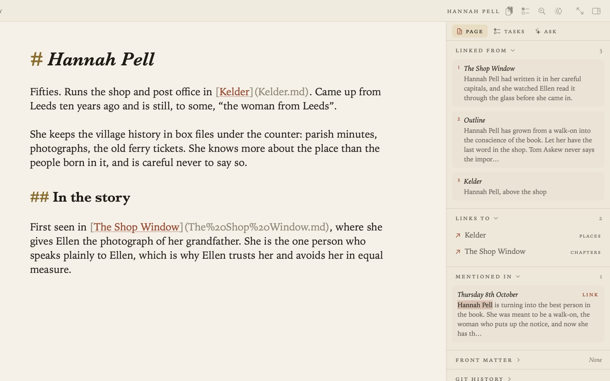
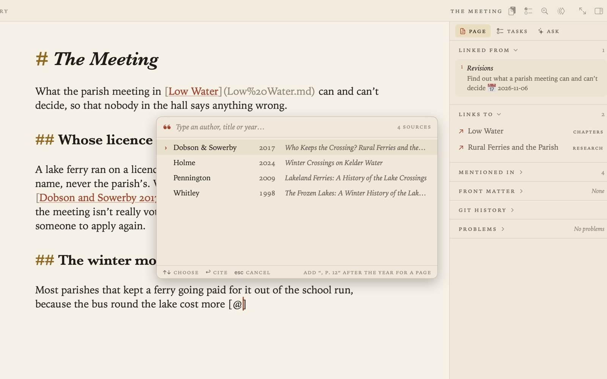
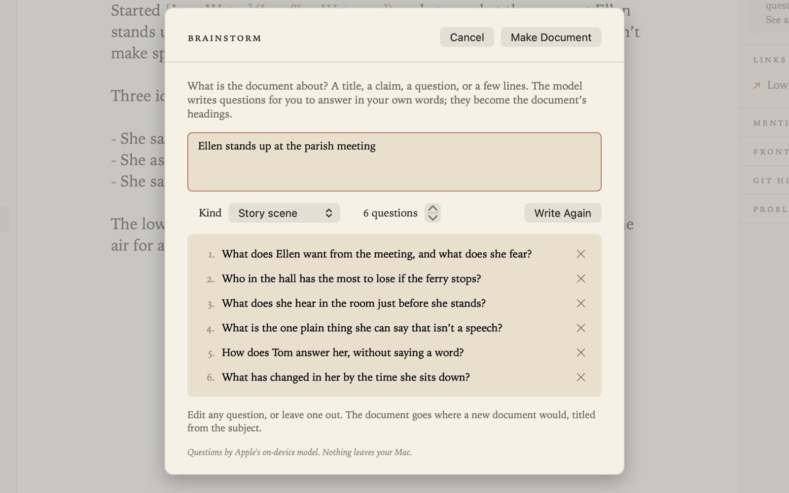
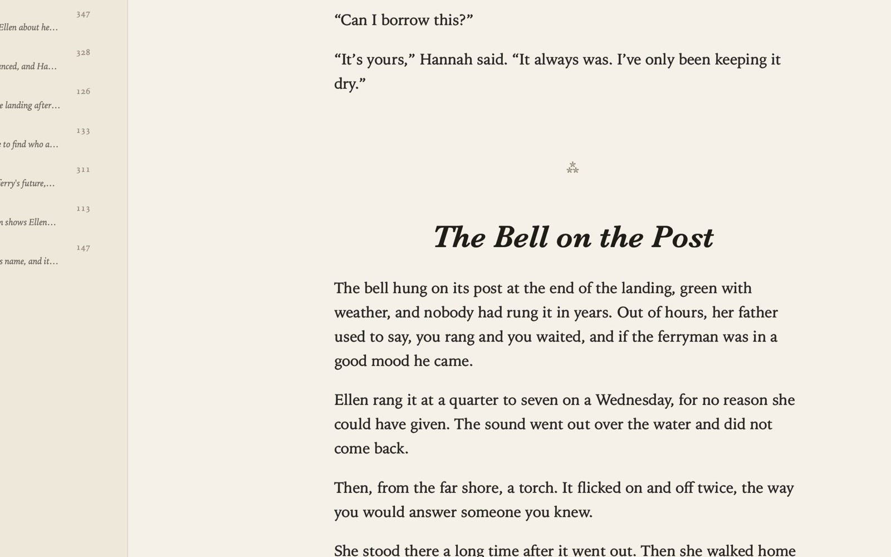
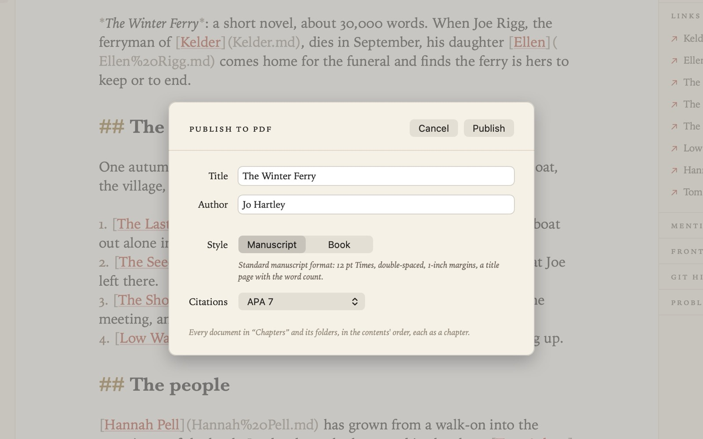

Grasmere is a Markdown editor for writers and researchers, with sophisticated features to take you from an idea to a manuscript or thesis.
Download for macOSFree for 7 days, then a single purchase · 1.2 · macOS 26+





01PlanMake a plan for your project. Collect your research from websites, books and papers so you can cite it later. Bring together all your tasks in one list.Web ClippingResearchTasksIndex CardsJournal
04PublishPublish your manuscript in PDF or Word Doc, complete with citations and formatting. Publish your project as a website with one click.ManuscriptPDFWordWebsite